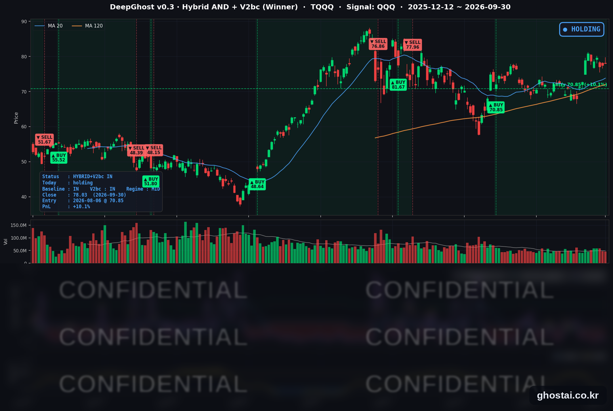

PCE 예상 하회에도 10년물 금리 24년 만의 최고
· Ghost.AI 데일리 리포트
👻 매일 시그널과 히스토리를 홈페이지에서 한눈에 → www.ghostai.co.kr
회원 페이지 안내 — 회원 가입하시면 커버리지 전 종목의 원본 시그널과 분석 레포트를 매일 확인하실 수 있습니다. 회원 페이지는 블로그·유튜브보다 먼저 업데이트됩니다. 선착순 100명을 모집하고 있으며, 이메일과 필명만으로 가입하실 수 있고 서비스 사용료는 받지 않습니다. 가입 신청 후 운영자 승인을 거쳐 이용하실 수 있습니다.
3분기 마지막 거래일, 8월 PCE 물가는 예상보다 낮게 나왔지만 미국 10년물 국채금리는 5.293%로 2002년 5월 이후 가장 높은 종가를 기록하며 7거래일 연속 올랐습니다. 주식은 높게 출발했다가 장 막판에 밀려 세 지수 모두 당일 저가로 마감했습니다. 9월 한 달로는 나스닥만 올랐고, S&P 500 구성종목 등락률 중간값은 -6.33%였습니다. 금리가 오르는 바람에 중소형주가 타격을 많이 받았고 그나마 대형주만 버티고 있는 상황입니다.
📊 오늘의 매매 신호
| 항목 | 내용 |
|---|---|
| 오늘 할 일 | ✅ 아무것도 안 해도 됩니다 |
| 포지션 상태 | 📈 TQQQ 보유 중 (IN POSITION) |
| 매수 진입일 | 2026-08-06 (39거래일째) |
| 진입가 → 현재가 | $70.85 → $78.03 |
| 현재 포지션 수익 | +10.13% |
TQQQ 시그널 — IN POSITION
현재 상태: 매수 포지션 유지 중 | 이번 포지션 수익 +10.13%

나스닥100(QQQ)이 +0.25% 오르면서 TQQQ는 +0.74% 오른 78.03달러로 마감했습니다. 0.88% 높게 출발한 뒤 정규장에서는 0.14% 내렸습니다. 전략의 평가수익률은 전 거래일 +9.33%에서 +10.13%로 늘었습니다. 전략은 보유를 유지했고, 모델 기준으로 매도 신호까지의 여유는 전일보다 늘었습니다.
10년물 금리가 9월 22일부터 7거래일 동안 33bp 오르는 사이 QQQ는 0.23% 내리는 데 그쳤습니다. 전략이 기준으로 삼는 것은 금리 수준이 아니라 나스닥100의 가격 움직임입니다. 8월 6일 진입 이후 10년물이 62bp 오르는 동안에도 전략은 보유를 유지했습니다. 10월 2일 발표되는 9월 고용보고서가 금리와 나스닥100을 크게 움직이는지가 다음 확인 포인트입니다.
오늘 미국 시장 — 시황 요약
지수 마감
| 지수 | 종가 | 등락률 |
|---|---|---|
| S&P 500 | 7,651.54 | -0.25% |
| 나스닥 종합 | 26,861.06 | +0.24% |
| 다우존스 | 50,906.05 | -0.86% |
| IWM (러셀 2000 ETF) | 277.89 | -0.40% |
| QQQ (나스닥100) | 739.77 | +0.25% |
| TQQQ | 78.03 | +0.74% |
세 지수 모두 당일 저가로 마감했습니다. 오전 8시 30분 PCE 물가가 예상보다 낮게 나오자 주식은 높게 출발했고, S&P 500은 장중 +0.68%까지 올랐습니다. 장 막판 장기 금리가 오르면서 하락으로 돌아섰습니다. S&P 500 구성종목 중 오른 종목은 22.9%였고, 다우의 -0.86%는 9월 16일 이후 가장 큰 하락입니다. QQQ는 정규장 하락 폭이 -0.06%로 작아 상승으로 끝났습니다.
9월 한 달로는 나스닥 종합 +1.86%, S&P 500 -0.45%, 다우 -4.29%, IWM -5.46%였습니다. S&P 500 구성종목 등락률 중간값은 -6.33%로, 반도체·대형 기술주 몇 종목이 오르는 동안 대부분의 종목은 내렸습니다.
국채 금리 동향
| 만기 | 수익률 | 전 거래일 대비 |
|---|---|---|
| 3개월 | 4.030% | -3.5bp |
| 5년 | 5.089% | +2.6bp |
| 10년 | 5.293% | +3.8bp |
| 30년 | 5.638% | +4.4bp |
10년물은 2002년 5월 이후, 30년물은 2002년 6월 이후 가장 높은 종가입니다. 둘 다 9월 22일부터 7거래일 연속 올라 2025년 1월 이후 가장 긴 연속 상승을 기록했습니다. 5년물 5.089%도 2007년 7월 이후 가장 높습니다.
단기 금리는 반대로 내렸습니다. 3개월물은 3.5bp, 재무부 공시 기준 2년물은 4.89%에서 4.88%로 1bp 내렸습니다. 10년물과 3개월물의 차이는 119.0bp에서 126.3bp로 벌어져 커브가 더 가팔라졌고, 역전은 없습니다. 물가가 낮게 나와 단기 인상 기대는 줄었지만, 8월 실질 소비(+0.6%)와 2분기 성장률 상향(1.5% → 2.2%)이 확인되면서 장기 금리는 내려오지 않았습니다.
10년물은 9월 한 달 53.5bp 올라 2022년 9월 이후 가장 큰 월간 상승을, 3분기에는 87.5bp(4.418% → 5.293%) 올라 1994년 1분기 이후 가장 큰 분기 상승을 기록했습니다.
연준 발언 & 금리 패스
- 쿡(Cook) 이사: 9월 회의에서 25bp 인상에 찬성했다고 밝히며 "물가가 너무 오랫동안 너무 높았다"고 했습니다. 전국 기준으로 5년 넘게 2% 목표를 웃돌고 있다고 했고, 향후 금리 경로나 이날 PCE 지표에 대한 언급은 없었습니다.
- 윌리엄스(Williams) 뉴욕 연은 총재 (전일): "서두를 필요가 없다"며 추가 인상 시점으로 "연말"을 언급했습니다. PCE 발표 뒤 시장은 이 발언을 다시 근거로 삼았습니다.
쿡 이사의 발언은 기존 입장을 확인한 수준이었고, 시장을 움직인 것은 PCE 지표였습니다. CME FedWatch 기준 10월 인상 확률은 50% 안팎에서 40% 안팎으로 내려갔고(출처별 37~40%), 연말까지 한 번 이상 인상할 확률은 약 90%로 보도됐습니다. 연준은 9월 16일 정책금리를 3.75~4.00%로 올렸고, 다음 FOMC는 10월 27~28일입니다. 10월 1일 제퍼슨 부의장 연설과 10월 2일 9월 고용보고서가 다음 재료입니다.
오늘의 핵심 이슈
- PCE 예상 하회, 그래도 장기 금리는 상승. 8월 PCE 물가는 전년 대비 3.4%, 근원 3.0%로 예상(3.7%, 3.3%)을 밑돌았습니다. 이번 발표에 연례 개정이 포함돼 과거 수치가 함께 낮아졌고, 금융자문·법률 서비스·소프트웨어의 가격 산정 방식이 바뀐 영향이 컸다는 분석이 나왔습니다. 10월 인상 확률은 낮아졌지만, 소비와 성장률이 강하게 나와 장기 금리는 올랐습니다.
- 세 지수 저가 마감, 소프트웨어만 고르게 상승. 소프트웨어는 12종목 중 11종목이 올랐습니다(중간값 +1.87%). 필수소비재·은행·주택건설·리츠·결제는 오른 종목이 없었습니다. 미 해군이 차세대 함재 전투기(F/A-XX) 사업자로 보잉을 선정하면서 노스롭그러먼은 4.19% 내렸습니다.
- 좁은 장세로 끝난 9월. S&P 500 구성종목 중 9월에 오른 종목은 21.5%였습니다. 반도체(중간값 +7.95%)·항공·AI 인프라 하드웨어만 뚜렷하게 올랐고, 여행 예약(-16.95%)·신용평가·데이터·은행·증권은 크게 내렸습니다. 다우는 3월 이후 가장 큰 월간 하락을 기록했습니다.
변동성 & 투자심리
VIX는 전일 16.04에서 16.34로 올랐습니다(+1.87%). 장중 15.62~16.61 범위에서 움직였고, 8월 말(14.92)보다는 높지만 16 안팎에 머물렀습니다. CNN 공포탐욕지수는 30.8로 "공포" 구간입니다. 전일 31.6, 1주 전 32.5, 한 달 전 53.7(중립)이었습니다. 7개 구성 지표 중 주가 강도와 시장 폭이 극단적 공포이고, 하이일드 채권 수요만 탐욕 쪽입니다. S&P 500은 사상 최고 종가 대비 -1.89%, 나스닥 종합은 -1.41%로 지수는 고점 근처지만, 대부분의 종목은 9월 내내 내렸습니다.
매크로 & 원자재
| 품목 | 종가 | 등락률 |
|---|---|---|
| 원유 (USO) | $145.66 | +1.61% |
| 금 (GLD) | $380.84 | -0.54% |
원유 ETF는 전일 4.44% 하락 뒤 일부를 되찾았습니다. 2.66% 높게 출발했다가 정규장에서 1.03% 내렸고, 9월 +8.95%, 3분기 +36.85%입니다. 금 ETF는 정규장에서 0.92% 내렸고, 9월 -6.75%로 6월 이후 가장 큰 월간 하락을 기록했습니다.
- 8월 PCE: 물가 전월 대비 +0.3%(근원 +0.2%), 명목 소비 +0.9%, 실질 소비 +0.6%, 개인소득 +0.2%, 저축률 4.1%.
- 2분기 GDP 3차 추정: 연율 2.2%로 2차 추정(1.5%)보다 0.7%포인트 상향됐습니다.
- 9월 ADP 민간고용: 9.0만 건 늘어 예상(6.8만~7.5만 건)을 웃돌았습니다.
주요 종목 동향
| 종목 | 종가 | 등락률 | 비고 |
|---|---|---|---|
| INTC | 120.23 | +3.71% | 9월 +34.32%로 커버리지 1위 |
| AAPL | 333.02 | +1.10% | 전일 -2.66% 뒤 일부 회복 |
| AMZN | 249.15 | +1.01% | |
| GOOGL | 344.08 | +0.93% | 장중 352.60까지 상승 |
| MSFT | 512.90 | +0.77% | 3분기 +37.50%로 커버리지 1위 |
| TSLA | 354.81 | +0.56% | 3분기 인도량 발표 예정(공식 일정 미확인) |
| NVDA | 228.38 | +0.51% | 높게 출발한 뒤 정규장에서 하락 |
| MU | 1,065.11 | +0.00% | 장 마감 후 FQ4 실적 발표 |
| QCOM | 184.04 | -0.03% | |
| NFLX | 69.58 | -1.02% | 9월 -14.15%로 커버리지 최대 하락 |
| AVGO | 351.19 | -1.10% | |
| META | 725.18 | -1.84% | OpenAI AI 에이전트 경쟁 우려 보도 |
커버리지 12종목 중 7종목이 오르고 MU는 보합, 4종목이 내렸습니다. S&P 500 전체와 달리 대형 기술주는 대체로 올랐습니다. 마이크론은 장 마감 후 FQ4 매출 542.3억 달러로 회사 가이던스(500억 ± 10억 달러)를 크게 웃돌았고, FQ1 매출 가이던스도 615억 ± 15억 달러로 시장 예상(약 570억 달러)보다 높게 제시했습니다. 시간외 거래 반응은 크지 않았다고 보도됐습니다. 메타는 OpenAI가 전일 공개한 AI 에이전트 dots가 메타의 Muse와 같은 시장을 겨냥한다는 우려로 내렸습니다.
다음 일정 (미 동부시간)
- 10/1(목) 08:30 신규 실업수당 청구, 10:00 ISM 제조업, 13:30 제퍼슨 부의장 "미국 경제와 통화정책" 연설, 나이키 실적(장 마감 후), 마이크론 실적 발표 후 첫 거래일
- 10/2(금) 08:30 9월 고용보고서(한국시간 오후 9시 30분)
- 이후 10/7 9월 FOMC 의사록, 10/14 9월 CPI, 10/27~28 FOMC
Ghost.AI — Quantitative AI Investment
Model: DeepGhost v0.3 | Transformer-Based Deep Learning
Coverage: 13 tickers | Updated every trading day after US market close
⚠️ 본 자료는 정보 제공 목적으로만 작성되었으며 투자 권유가 아닙니다. 모든 투자의 책임은 투자자 본인에게 있습니다. 과거 성과가 미래 수익을 보장하지 않습니다.
[유의사항]
- 본 서비스는 불특정 다수를 대상으로 발행되는 단방향 정보 제공 서비스이며, 투자자 개인의 재산 상황·투자 목적·위험 선호도를 반영한 개별 투자 조언이 아닙니다.
- 고스트에이아이 주식회사는 고객과 쌍방향 의사소통(개별 상담, 맞춤형 자문 등)을 제공하지 않습니다.
- 본 콘텐츠는 투자 권유 또는 매매 주문의 청약·청약의 권유에 해당하지 않으며, 최종 투자 판단 및 그에 따른 손익의 책임은 전적으로 투자자 본인에게 있습니다.
고스트에이아이 주식회사